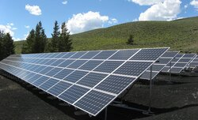
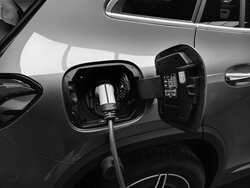

Global Warming and Climate Change
You might be thinking, what is global warning and climate change? According to USGS (science for a changing world) “Global warming” refers to the rise in global temperatures due mainly to the increasing concentrations of greenhouse gases in the atmosphere. “Climate change” refers to the increasing changes in the measures of climate over a long period of time – including precipitation, temperature, and wind patterns. All this changes in our planet are the consequences in our way of life. Since the Industrial Revolution, air temperatures have been increasing, however natural variables play a part as well. We all can help to limit climate change. From the way we travel, to the electricity we use, and the food we eat, we can make a difference. Here are some ideas:
Save energy at home. Much of our electricity and heat are powered by coal, oil, and gas. Use less energy by lowering your heating and cooling, switching to LED light bulbs and energy-efficient electric appliances, washing your laundry with cold water, or hanging clothes to dry instead of using a dryer.
Walk, bike, or take public transportation. The world’s roadways are clogged with vehicles, most of them burning diesel or gasoline. Walking or riding a bike instead of driving will reduce greenhouse gas emissions — and help your health and fitness. For longer distances, consider taking a train or bus. And carpool whenever possible.
Eat more vegetables. Eating more vegetables, fruits, whole grains, legumes, nuts, and seeds, can significantly lower your environmental impact. Producing plant-based foods generally results in fewer greenhouse gas emissions and requires less energy, land, and water.
Consider your travel. Airplanes burn large amounts of fossil fuels, producing significant greenhouse gas emissions. That means taking fewer flights is one of the fastest ways to reduce your environmental impact. When you can, meet virtually, take a train, or skip that long-distance trip altogether.
Throw away less food. When you throw food away, you're also wasting the resources and energy that were used to grow, produce, package, and transport it. And when food rots in a landfill, it produces methane, a powerful greenhouse gas. So, use what you buy and compost any leftovers.
Reduce, reuse, repair & recycle. Electronics, clothes, and other items we buy cause carbon emissions at each point in production. From the extraction of raw materials, to manufacturing, and transporting the goods to the market. To protect our climate, buy fewer things, shop second-hand, repair what you can, and recycle.
Change your home's source of energy. Ask your utility company if your home energy comes from oil, coal, or gas. If possible, see if you can switch to renewable sources such as wind or solar. Or install solar panels on your roof to generate energy for your home.
Switch to an electric vehicle. If you plan to buy a car, consider going electric, with more and cheaper models coming on the market. Even if they still run on electricity produced from fossil fuels, electric cars help reduce air pollution and cause significantly fewer greenhouse gas emissions than gas or diesel-powered vehicles.